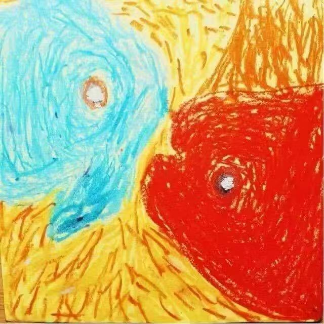
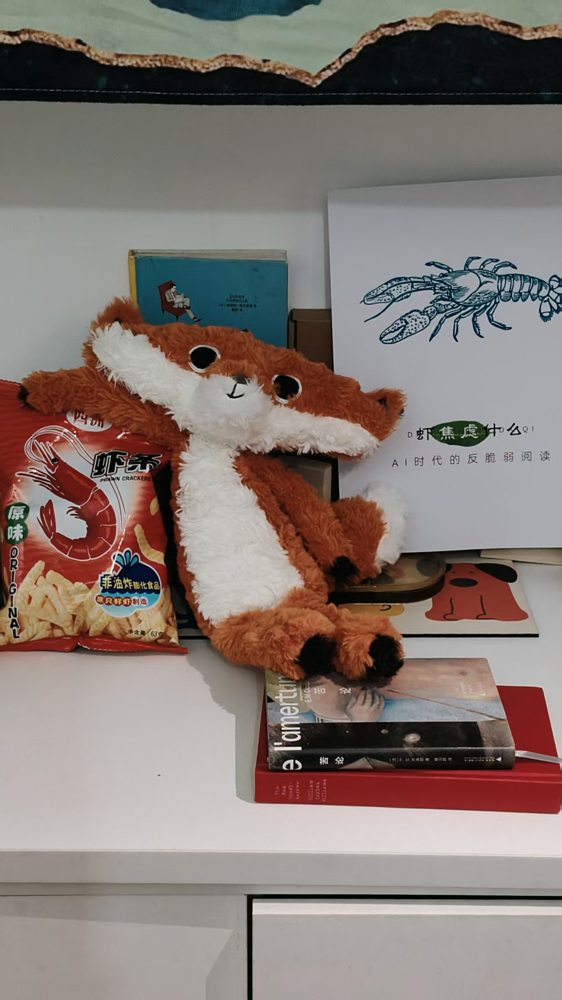

我们的使命与愿景
大器层·代际研究致力于深入探索不同世代的价值观、行为模式与消费习惯，为企业和组织提供基于科学研究的决策支持。我们相信，理解代际差异是构建和谐社会与高效组织的关键。
成为代际研究领域的引领者，通过跨学科的研究方法，为解决代际冲突、促进代际融合提供创新方案，助力企业在多元化的时代背景下实现可持续发展。
我们的研究团队致力于代际差异的深入探索
我们专注于以下代际研究领域
研究不同世代在工作价值观、沟通方式、激励机制等方面的差异，为企业提供跨代管理策略。
分析不同世代的消费习惯、品牌偏好、购买决策过程，为市场营销提供精准策略。
研究不同世代对数字技术的接受度、使用习惯和依赖程度，为产品设计提供依据。
探索不同世代之间的沟通障碍与解决方案，促进代际之间的理解与融合。
研究不同世代的学习方式、教育需求和知识获取习惯，为教育创新提供方向。
分析全球化背景下不同国家和文化中代际差异的共性与特性，为跨国企业提供参考。
我们采用科学、系统的研究方法
覆盖不同年龄段的样本，获取量化数据，确保研究结果的代表性和可靠性
利用大数据技术分析代际行为模式，发现隐藏的趋势和规律
控制变量，验证代际差异的因果关系，提供科学的理论依据
与不同世代代表进行深入交流，了解其真实想法和感受
组织同世代或跨世代小组讨论，激发思想碰撞，发现群体共识
观察不同世代的日常生活与行为，获得真实的生活场景数据
我们的核心研究人员

首席研究员
代际研究专家，专注于代际冲突修复法与代际叙事三角模型
高级研究员
社会学博士，专注于代际流动与阶层再生产研究
研究员
心理学博士，专注于代际创伤与家庭心理学研究

研究员
专注于代际消费行为与数字文化研究
与我们取得联系
wmadeyun@gmail.com
13201828929
广州市番禺区西坊大院u栋